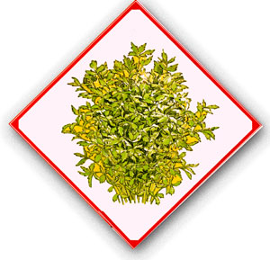
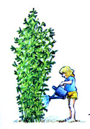
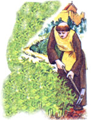

Lately, more and more people have begun to understand just how limited - in both variety and nutritional value-our "modern" diets have become. This realization has yoked a new and wide spread interest in the culinary and therapeutic uses of herbs ... those plants which-although not wellknown
today-were, just one short generation ago, honored "guests" on the dinner tables and in the medicine chests of our grandparents' homes. In this regular feature, MOTHER will examine the availability, cultivation, and benefits of our "forgotten" vegetable foods and remedies ... and-we hope-help prevent the loss of still another bit of ancestral lore.
If you find celery hard to grow -and the cost of buying It prohibitive-then lovage (Levisticum of ficinale) may be just what you're looking for! It's an easy-to-cultivate perennial herb that tastes like the "real thing" and can be used whenever celery is design soups, salads. casseroles, and stuffings. And-given the proper soil and growing conditions-the pretty plant will mature to a height of sex feet or more!
Many people have never heard of this fine herb, but it's been around for centuries. The Romans thought enough of the tall, aromatic plant to take it with them to England, and lovage was grown in medieval monastery gardens for medicinal, as well as culinary, uses. Dr. Samuel Johnson recommended the long-lasting perennial for rheumatism, while the American colonists brought it with them to make a favorite tea ... which they hoped would help ward off the New World's aches and pains.
Lovage is big and beautiful enough to deserve a prominent spot in even the most carefully landscaped yard. Its leaves are shiny, dark green, and finely cut (they both look and smell like celery greens) and in late June or early July yellow flowers spread their big "umbrella" clusters above the lush foliage.
The handsome herb is more than just another "pretty face" in your garden, however, because every part of this plant is edible. Old-timers hilled up the soil around the base of the stems to blanch them, then harvested the stalks like celery. (Lovage does have a stronger flavor than the more familiar vegetable, though, so only use about half as much in any given recipe , ) The large stems are especially tasty when they're candied ... the tender young growth adds zest to salads ... the seeds can be added-just like celery seed-to pastries and candy, or sprinkled over fruit (in fact, lovage kernels are sweeter than those of celery). Even the roots have been used as a remedy for a variety of ailments.
Both leaves and stems may be dried for winter use, too. To prepare the foliage for your spice shelf, just swish the stems in water, then clip off the leaflets and spread them out on a tray or newspaper until they're ready to be stored in airtight containers. The seed heads (which mature in August) should be laid out flat to dry, then put in a large bag and shaken to remove the "nutlets".
This versatile substitute for celery requires rich, moist soil with good drainage and partial shade. Its roots go far into the ground to support the tall, spreading growth, so dig organic matter or compost in to a depth of at least a foot before you set out your herbs.
You'll probably find that one lovage plant produces more leaves than your household can use, and the old fronds are inclined to turn yellow. When that happens, simply clip off the entire stem and add it to your compost heap. There'll be plenty more.
I keep my plants mulched to conserve moisture, especially during summer dry spells. In the fall, well-rotted manure (or compost and lime) should be scratched into the soil to provide the nutrients lovage needs in order to thrive. New starts can be propagated by root division in the spring.
Several mail-order herb nurseries sell lovage: Nichols Garden Nursery (Dept. TMEN, 1190 North Pacific Highway, Albany, Oregon 97321) offers seed packets for 5541 and a minimum order of three plants for $6.35, and WellSweep Herb Farm (Dept. TMEN, 317 Mt. Bethel Road, Port Murray, New Jersey 07865) sells seed packets for 600 and plants for $ 1. 10 each.
Just think, once one of these huge herbs Is established by your kitchen door, you'll never want for "celery" again. Andafter you've had a chance to get to know the prolific plant-I think you'll agree that lovage is "a many-splendored thing"!
|
|
 |
 |
|
 |
|
|